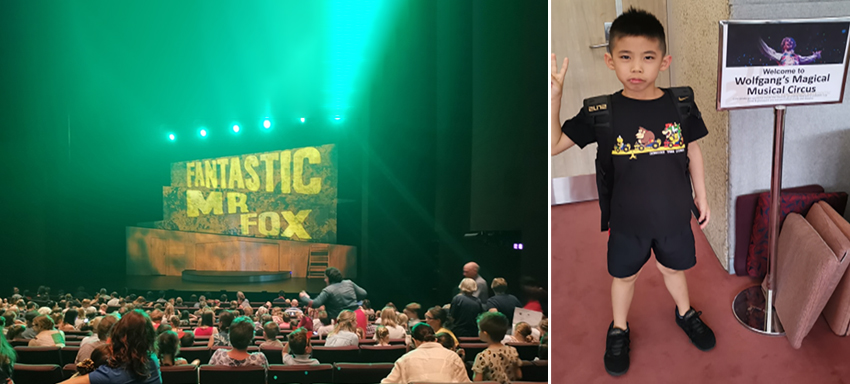
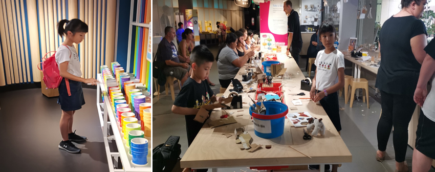
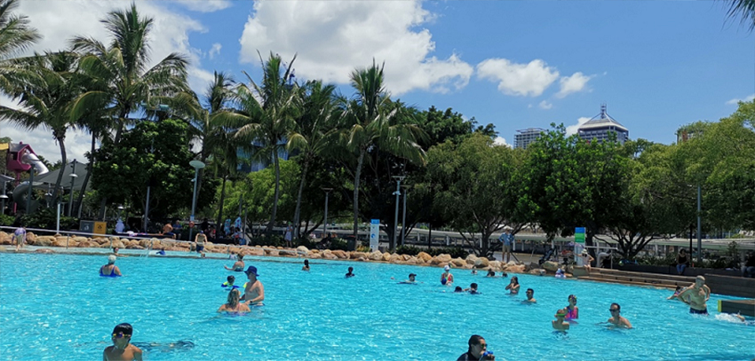
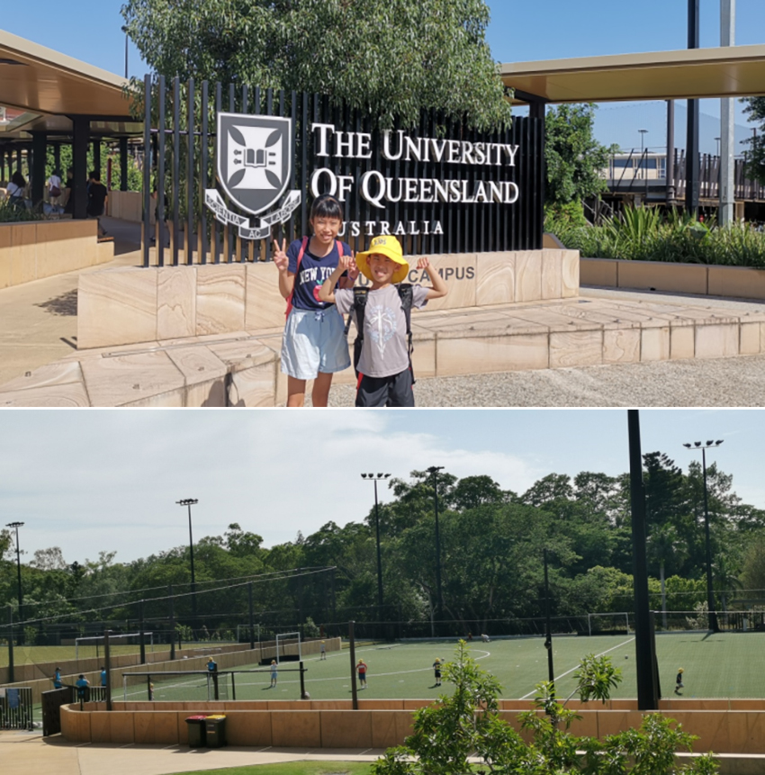
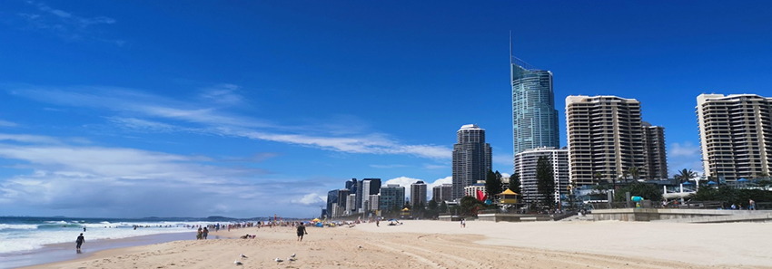
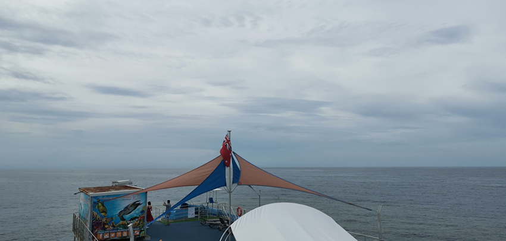
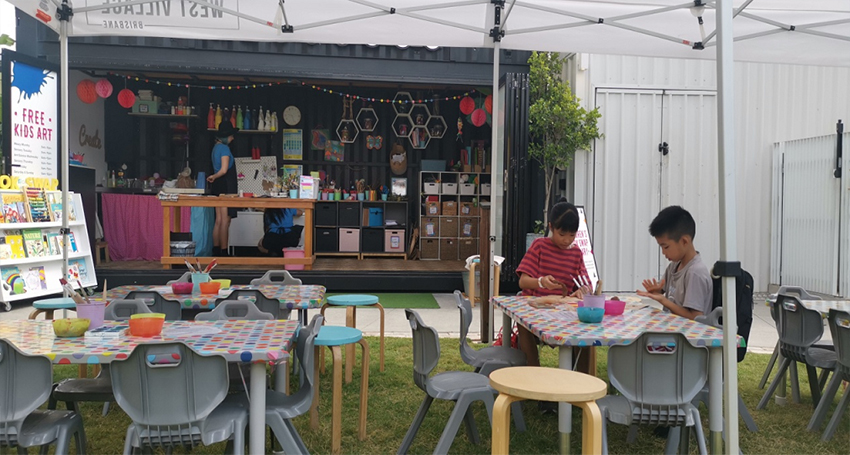

在朋友的推薦下，花了一段時間規劃出近一個月的短期遊學布里斯本之旅。布里斯本位在南半球澳洲昆士蘭，是一座人口第三多的澳洲城市，有著陽光之都的美名，第一次以在地生活的方式出國，孩子們都相當期待這次能蹦出什麼樣的火花。
在學校還沒開課的情況下，我們先幫孩子安排觀看兩場表演，羅德達爾Roald Dahl的THE FOX(狐狸爸爸萬歲)，及Wolfgang’s Magical Musical Circus。建議在台灣就把票買好，雖然在放假期間場次不算少，但當時在台灣購票時很多時段已全部賣光光。相信我，在每次出國旅行中排一到兩場音樂或藝術的表演欣賞。這會讓你在這次旅行中的質感大大提升，也可以讓孩子看到跟在台灣不同的藝術文化！
|  |
天氣實在炎熱，雖然沒有台灣悶熱感那麼不舒服。太陽還是大到很嚇人的，上午欣賞完演出。吃過午餐，音樂廳對街就是博物館了；博物館展覽著許多不一樣的主題，小孩跟我選了一個叫做SPARK LANB的展區。中午進去一直到要關門了，小孩玩到出不來；每半小時就有一次不一樣的現場實驗，不管是重力、風力、聲波、電力外加手做區(這個就可以玩非常久)；太多好玩的了，地下室還有免費的遊戲區沒玩到呢！
|  |
布里斯本市最適合孩子們玩耍的地方，莫過於South Bank的大公園了。人工沙灘、還是一般泳池、超級大遊戲場都有，可以帶著孩子在著布里斯本河邊玩上一整天。可以簡單帶一點食物野餐，如果懶得準備也無仿；旁邊就有各式各樣的餐廳可以選擇！到了週末這裡更是熱鬧，沿著公園一路許多各國手工藝的小攤販，算是週末才有的小市集。
|  |
孩子們的上課日終於到了，媽咪幫孩子報名了昆士蘭大學中給孩子的暑期課程，這個當地課程以年齡分班，而且全部五六十個孩子中不到五個華人小孩(加我們家兩隻喔)。算是真的可以有機會好好跟當地的小朋友一起玩耍，其實這也是這次帶他們出來的目的之一，不要每次出國所有行程都只有跟爸媽黏在一起，小孩的適應能力真的是我們無法想像的好，無法快速適應的通常是大人呀！
學校課程整天下來都是各式各樣的運動課程，游泳、球類運動老師也會帶入許多遊戲，每次放學接到他們就會嘰哩瓜拉講個不停，分享今天又有哪些趣事。這次帶孩子們來並不想讓他們只是坐在教室上課的學習方式，換個環境換個方式孩子們的學習可以有更多不一樣的火花.。
|  |
當然上課之餘也要出去玩耍一下，週末到觀光客最愛的黃金海岸(Gold Coast)。人潮算多但不擁擠，海岸線很長很美已看不到盡頭，但是四處可見比基尼辣妹。爸爸跟小孩泡在冰涼的海裡，媽媽躺在沙灘上曬日光浴，現在的年紀實在….，不然還可以租借衝浪板來玩玩，這兒可是衝浪者的天堂呢！ 如果覺得太熱附近還有許多可以逛逛的店家，在這裡充分的可以感受到休假放鬆的氛圍，不管大人小孩都十分喜愛這個地方。
|  |
這次旅程，額外安排了三天兩夜的肯恩斯-大堡礁之旅，選擇其中一天帶小孩出海浮潛。出海當天的一大早還下著大雨呢，問了一下船公司會不會如期出海，答案居然是肯定的。算了，既來之則安之，船行駛在海面上往窗外看，什麼也看不到就知道雨有多大了！就在一個多小時後我們停靠在一個海上的平台，很幸運地天氣開始放晴。船上提供buffet的午餐，用完餐全家著裝就下海玩耍了。
海上有許多水母，所以一定要換上防寒的緊身衣，看著小孩在海中浮潛，喊著好多好漂亮的魚且有許多色彩鮮艷的珊瑚礁景色，果真是世界遺產之一，是值得推薦的地方，真棒！
|  |
暑假期間在當地也有許多免費的課程可以體驗，像是在WEST END的一個教堂公園空地旁，就有免費的畫畫手做課程，無須帶任何物品，現場提供老師當天要教導所需要的所有材料。真的是很幸福的地方，如果想知道老師哪一天會教什麼樣的勞作還可以先加入會員之類的，都會定期收到老師傳來的作品與授課時間，如果是孩子喜歡的再過去即可！
|  |
圖書館也有許多闖關尋寶，或是手作課，總之在布里斯本的放假期間沒有多餘的時間可以浪費；有許多好玩又有趣的等著你去發現。